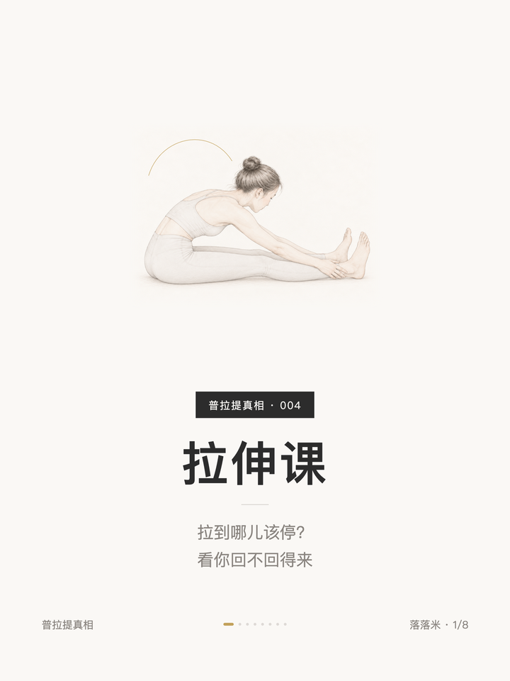
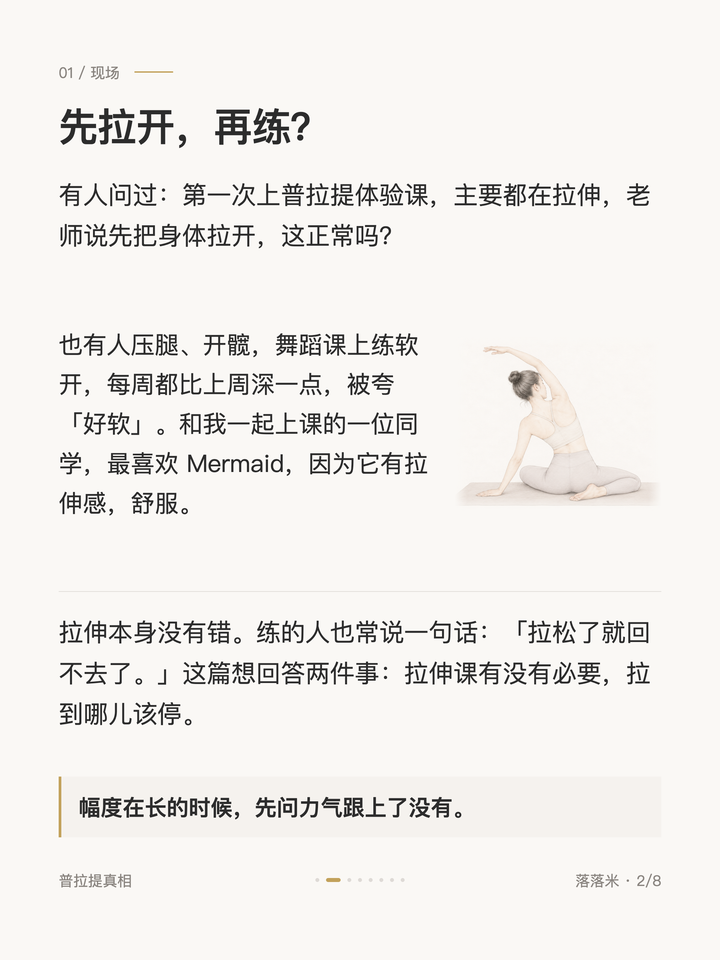
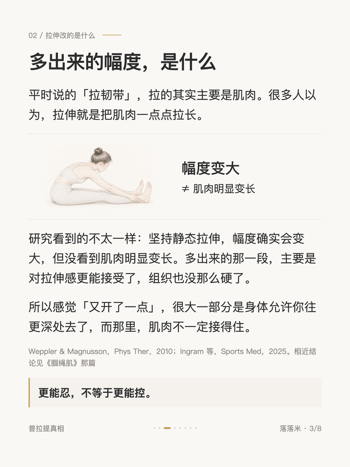
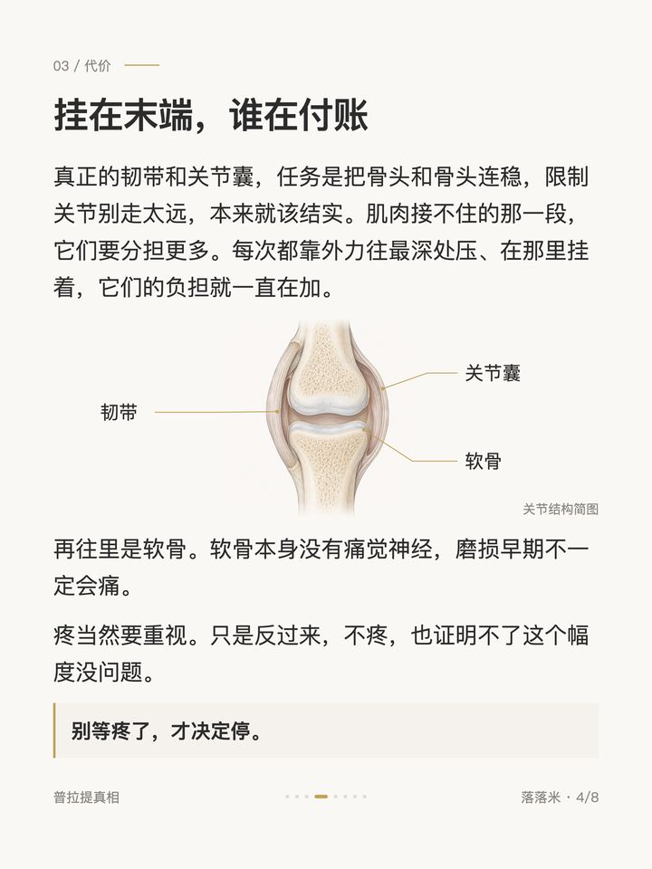
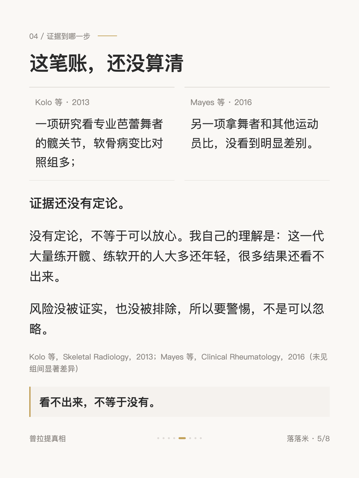
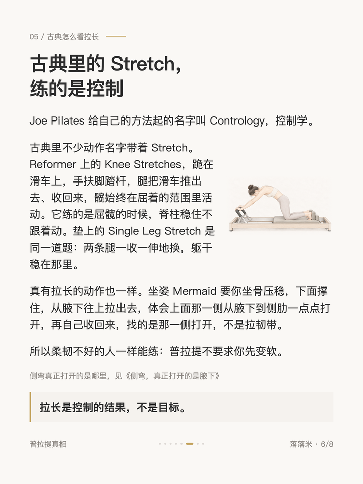
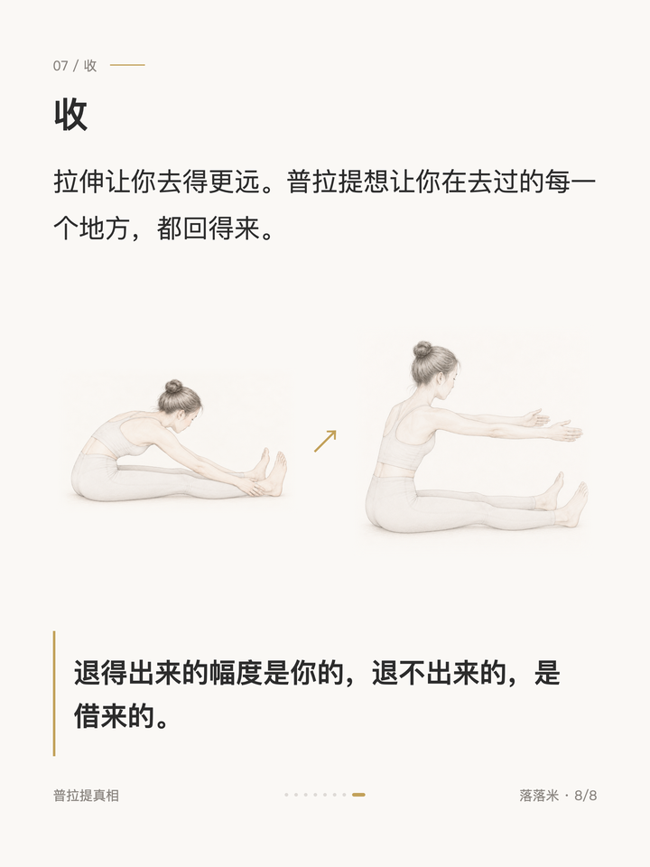

普拉提真相 #004
普拉提拉伸课有必要吗？先看你回不回得来

1 / 8

2 / 8

3 / 8

4 / 8

5 / 8

6 / 8
7 / 8

8 / 8
← 左右滑动浏览全部卡片 →
第一次上普拉提体验课，主要都在拉伸，老师说先把身体拉开。压腿、开髋，每周都比上周深一点，看起来也是进步。
可拉伸多出来的幅度，主要是对拉伸感更能接受了，没看到肌肉明显变长。总靠外力压到最深处挂着，韧带、关节囊和软骨的负担在加；软骨本身没有痛觉，不疼也证明不了没问题。
古典普拉提里，名字叫 Stretch 的动作，练的大多是控制：Knee Stretches 练的是屈髋时脊柱稳住。拉长是控制的结果，不是目标，所以柔韧不好也一样能练。
拉伸课有没有必要，看拉完回到原动作有没有变化；拉的时候，看停不停得住、退回来要不要借手。退得出来的幅度是你的，退不出来的，是借来的。